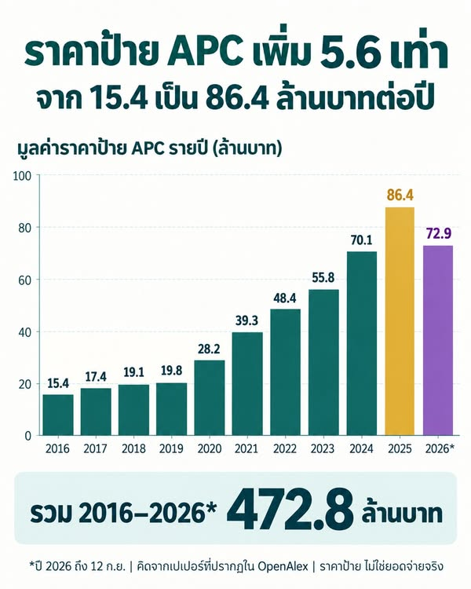

ราคาป้าย APC ของงาน Open Access มก. เพิ่ม 5.6 เท่า แต่ไม่ได้แปลว่าราคาต่อบทความเพิ่มเท่ากัน
{kind=link}

ข้อมูลจาก OpenAlex แสดงว่า มูลค่ารวม APC ตามราคาป้ายของผลงาน Open Access ที่มีผู้แต่งสังกัดมหาวิทยาลัยเกษตรศาสตร์ เพิ่มจากประมาณ 15.4 ล้านบาทในปี 2016 เป็น 86.4 ล้านบาทในปี 2025 หรือเพิ่มขึ้นประมาณ 5.6 เท่า
ระหว่างทาง ยอดรวมอยู่ที่ 28.2 ล้านบาทในปี 2020, 48.4 ล้านบาทในปี 2022 และ 70.1 ล้านบาทในปี 2024 เมื่อรวมปี 2016 ถึง 12 กันยายน 2026 มูลค่าราคาป้ายอยู่ที่ประมาณ 472.8 ล้านบาท
หนึ่งเปเปอร์นับหนึ่งครั้ง
การคำนวณนี้นับหนึ่งครั้งต่อเปเปอร์ ไม่ว่าบทความนั้นจะมีผู้แต่งจากมหาวิทยาลัยเกษตรศาสตร์กี่คน จึงหลีกเลี่ยงการนับซ้ำภายในมหาวิทยาลัยจากจำนวนผู้แต่ง แต่ตัวเลขยังสะท้อนมูลค่าราคาป้ายที่เชื่อมโยงกับผลงาน ไม่ใช่การระบุว่า มก. เป็นผู้ชำระเงินทั้งหมด
ยอดรวมโต ไม่ได้แปลว่าราคาต่อบทความโตเท่ากัน
จำนวนเปเปอร์ OA ที่มีข้อมูลราคาป้ายเพิ่มจาก 163 เรื่องในปี 2016 เป็น 1,051 เรื่องในปี 2025 หรือมากกว่าหกเท่า ดังนั้นการที่มูลค่ารวมเพิ่ม 5.6 เท่าจึงไม่ใช่หลักฐานว่า APC ต่อบทความแพงขึ้น 5.6 เท่า ส่วนสำคัญของการเพิ่มมาจากจำนวนผลงานที่เข้าสู่ระบบ OA และมีข้อมูล APC มากขึ้น
การแยก “ยอดรวม” ออกจาก “ราคาต่อหน่วย” สำคัญมาก เพราะตัวเลขทั้งสองตอบคนละคำถาม ยอดรวมช่วยให้เห็นขนาดของระบบ ส่วนราคาต่อบทความต้องวิเคราะห์องค์ประกอบของวารสาร สาขา สำนักพิมพ์ สกุลเงิน และปีที่ตีพิมพ์เพิ่มเติม
ราคาป้ายไม่ใช่ยอดจ่ายจริง
ข้อมูลนี้ใช้ APC list price หรือราคาที่วารสารประกาศ ไม่ใช่จำนวนเงินที่มหาวิทยาลัย ผู้แต่ง หรือแหล่งทุนจ่ายจริง ในทางปฏิบัติอาจมีส่วนลด การยกเว้นค่าธรรมเนียม ข้อตกลงกับสำนักพิมพ์ หรือผู้ร่วมวิจัยจากสถาบันอื่นเป็นผู้รับผิดชอบค่าใช้จ่าย
ตัวเลขเงินบาทใช้อัตราอ้างอิง 33.122 บาทต่อดอลลาร์สหรัฐ ณ วันที่ 11 กันยายน 2026 และข้อมูลปี 2026 สิ้นสุดวันที่ 12 กันยายน จึงไม่ควรนำยอดปี 2026 ไปเปรียบเทียบกับปีเต็มโดยไม่ระบุช่วงเวลา
ข้อมูลครอบคลุมประมาณ 64%
ตลอดช่วงที่ศึกษา พบเปเปอร์ OA ใน OpenAlex 9,879 เรื่อง ในจำนวนนี้ 6,320 เรื่องมีข้อมูลราคาป้าย คิดเป็นประมาณ 64% ความครอบคลุมนี้มากพอให้มองเห็นขนาดและแนวโน้ม แต่ยังไม่ใช่ภาพสมบูรณ์ของผลงาน Open Access ทั้งหมด
การไม่มีข้อมูลราคาป้ายอาจเกิดได้หลายเหตุผล และไม่ควรถูกตีความอัตโนมัติว่าไม่มีค่าใช้จ่าย เช่นเดียวกับการพบราคาป้ายก็ไม่ควรถูกตีความว่าเกิดการชำระเงินตามราคานั้นจริง
เกือบ 500 ล้านบาทควรนำไปสู่คำถามอะไร
ตัวเลข 472.8 ล้านบาทควรใช้เป็นฐานสำหรับตั้งคำถาม ไม่ใช่บัญชีรายจ่ายย้อนหลัง เราควรรู้ว่าต้นทุนจริงของการเผยแพร่งานวิจัยแบบ Open Access อยู่ที่เท่าไร ใครเป็นผู้จ่าย ส่วนลดและการยกเว้นมีขนาดเพียงใด และเงินไหลไปยังสำนักพิมพ์หรือช่องทางใดบ้าง
เมื่อมีข้อมูลยอดจ่ายจริง แหล่งเงิน และรูปแบบข้อตกลง จึงจะประเมินได้ว่าระบบปัจจุบันคุ้มค่า เป็นธรรม และสนับสนุนเป้าหมายด้านการเข้าถึงความรู้ของมหาวิทยาลัยเพียงใด